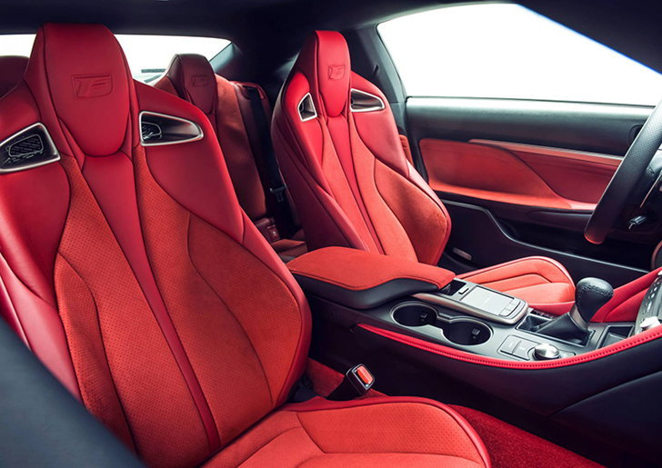
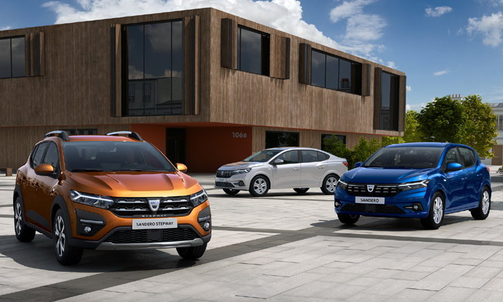
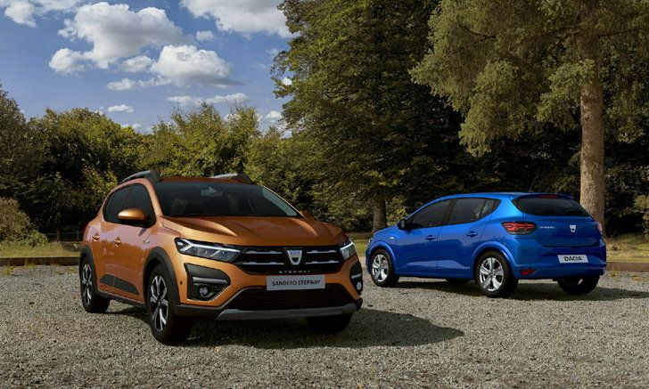
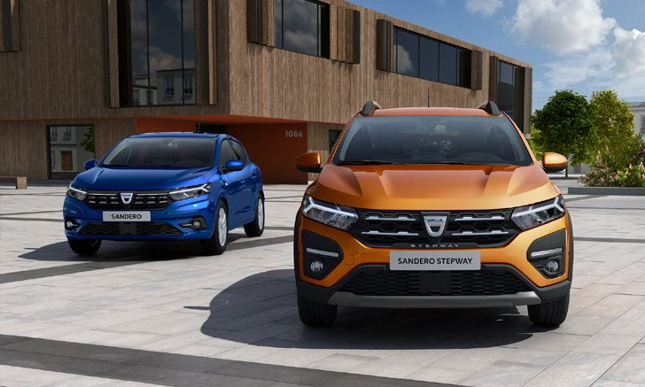
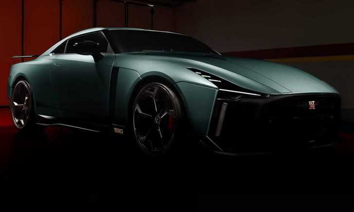
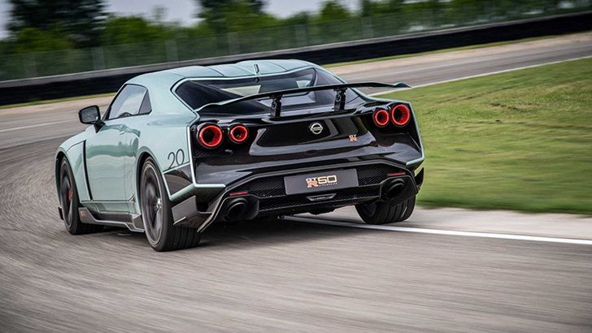

ผลิตเพียง 60 คัน! Lexus RC F Fuji Speedway Edition 2021 รุ่นพิเศษเน้นความเบา
Lexus อัพเกรดสมรรถนะให้กับ RC F รุ่นไมเนอร์เชนจ์ ด้วยการแนะนำรุ่นพิเศษ Fuji Speedway Edition เน้นน้ำหนักเบาด้วยคาร์บอนไฟเบอร์ และทรงพลังกับเครื่องยนต์ V8 พลัง 472 แรงม้า
RC F Fuji Speedway Edition เป็นรุ่นพิเศษที่จะถูกผลิตในจำนวนจำกัดเพียง 60 คัน และวางจำหน่ายในสีขาว Arctic Blast Satin และสีเทา Cloudburst Grey เท่านั้น โดยในส่วนของตัวถังสีขาว Arctic Blast Satin ทางค่าย Lexus อ้างว่ามีความสวยงามและมันวาวเหมือนผ้าซาติน อีกทั้งยังมีความทนทานพอที่จะเข้าเครื่องล้างรถอัตโนมัติได้
ไฮไลต์ของรุ่นพิเศษนี้อยู่ที่การอัปเกรดด้านสมรรถนะ ซึ่งประกอบด้วยเบรกคาร์บอนเซรามิกจาก Brembo, ท่อไอเสียไทเทเนียม และชุดพาร์ทที่เน้นแอโรไดนามิกซึ่งทำจากคาร์บอนไฟเบอร์ทั้งฝากระโปรงหน้า, หลังคา, สปอยเลอร์หลัง และสปอยเลอร์หน้า
ทั้งหมดนี้ส่งผลให้รุ่น Fuji Speedway Edition มีน้ำหนักเบากว่า RC F รุ่นสแตนดาร์ด อย่างไรก็ดี ทาง Lexus ไม่ได้เปิดเผยตัวเลขที่แน่นอนว่าเบากว่ากันเท่าใด
ภายในห้องโดยสารมาพร้อมเบาะที่นั่งหุ้มหนังสีแดง เสริมด้วย Alcantara และคาร์บอนไฟเบอร์ รวมถึงระบบสาระบันเทิงที่รองรับการเชื่อมต่อทั้ง Apple CarPlay, Amazon Alexa และบริการอื่นๆ การซื้อรุ่นพิเศษนี้ยังทำให้เจ้าของได้รับนาฬิกา MSTR เช่นเดียวกับการตกแต่งด้วยโลโก้ 'Fuji Speedway' และ 'F'
ใต้ฝากระโปรงติดตั้งเครื่องยนต์ V8 ความจุ 5.0 ลิตร ไร้ระบบอัดอากาศ ให้กำลังสูงสุด 472 แรงม้า แรงบิดสูงสุด 395 ปอนด์ฟุต จับคู่กับเกียร์อัตโนมัติ 8 สปีด และทำอัตราเร่ง 0-96 กม.ต่อ ชม. ได้ภายใน 3.96 วินาที
เผยดีไซน์ใหม่! Dacia ปล่อยภาพตระกูล Sandero ทั้ง 3 รุ่น ก่อนเปิดตัว 29 ก.ย.นี้
Dacia บริษัทผู้ผลิตรถยนต์สัญชาติโรมาเนีย หนึ่งในบริษัทลูกของ Renault แบรนด์ฝรั่งเศส ได้เผยโฉมรถในตระกูล Sandero ทั้ง 3 รุ่นประกอบด้วย Sandero รถอเนกประสงค์ไซส์เล็ก, Sandero Stepway และ Dacia Logan รถซีดานขนาดเล็ก โฉม 2021 เป็นครั้งแรก ก่อนที่จะมีการเปิดตัวแบบเต็มรูปแบบในวันที่ 29 กันยายนนี้
โดยทางค่ายดังในยุโรปได้เผยให้เห็นรูปลักษณ์ภายนอกของ Sandero ถือเป็นเจนเนอเรชั่นที่ 3 ของรถรุ่นนี้ ซึ่งมีการเปลี่ยนไฟเดย์ไลท์ LED เป็นรูปตัว Y รวมถึงไฟท้าย LED ที่ดูทันสมัยกว่ารุ่นก่อน
เมื่อเทียบกันแล้วต้องบอกว่า Sandero 2021 มีการปรับดีไซน์หลายจุดทั้ง กระจกหน้าที่ลาดเอียงมากขึ้น, แนวหลังคาที่ต่ำลง ซึ่งแม้จะไม่มีการปรับในช่วงของระยะจากตัวรถกับพื้นดิน แต่ด้วยดีไซน์ใหม่ทำให้มีความรู้สึกเหมือนกับว่ามันจะเกาะถนนได้ดีกว่าเดิม
ในส่วนของ Sandero Stepway รถครอสโอเวอร์ มีการปรับในช่วงฝากระโปรงที่โปร่งมากขึ้น มาพร้อมชุดกันชนหน้า และบังโคลนแบบใหม่ ที่เป็นเอกลักษณ์เพื่อให้ดูมีความสมบุกสมบัน พร้อมลุยไปทุกที่
สุดท้ายกับ รุ่นซีดานของ Sandero อย่าง Dacia Logan รถซีดานขนาดเล็กราคาประหยัดที่มีการเปลี่ยนแปลงการออกแบบให้มีกระจากที่เล็กลง เส้นหลังคาดูลื่นไหลมากขึ้น
อย่างไรก็ตาม บริษัทผู้ผลิตรถยนต์สัญชาติโรมาเนีย ยังไม่เผยเกี่ยวกับสเปคเครื่องยนต์รุ่นใหม่ รวมถึงภายในห้องโดยสารว่าจะมีการปรับแผงหน้าปัดใหม่ หน้าจออินโฟเทนเมนต์ รวมถึงพวงมาลัยมัลติฟังก์ชัน ที่คาดว่าจะได้รับการอัพเกรดเพิ่มสำหรับปี 2021
จำกัดแค่ 20 คัน! Nissan GT-R R35 Final Edition รุ่นพิเศษส่งท้ายจะมาในปี 2022
ดูเหมือนว่าการทำตลาดอย่างยาวนานของ GT-R R35 กำลังจะสิ้นสุดลงในอีกไม่กี่ปีข้างหน้านี้แล้ว เมื่อล่าสุดมีรายงานข่าวว่า Nissan เตรียมออกรุ่นพิเศษเพื่อเป็นการส่งท้ายเจ้าก็อดซิลลายอดนิยมในชื่อ Nissan GT-R R35 Final Edition
เว็บไซต์ Best Car Web ของญี่ปุ่น รายงานว่า Nissan จะเปิดตัวรุ่นพิเศษ Final Edition เพื่อบอกลา GT-R R35 ในปี 2022 หลังทำตลาดมานานกว่า 14 ปี โดยรุ่นพิเศษนี้จะให้แรงม้าสูงสุด 710 ตัว และแรงบิดสูงสุด 780 นิวตันเมตร ซึ่งเป็นเครื่องยนต์บล็อกเดียวกับ GT-R50 By Italdesign
นอกจากนี้ สื่อของญี่ปุ่นยังระบุอีกด้วยว่า GT-R R35 Final Edition จะถูกผลิตในจำนวนจำกัด 20 คัน และมีราคาอยู่ที่ 40 ล้านเยนในญี่ปุ่น ซึ่งหากคิดเป็นเงินไทยก็ราวๆ 11.8 ล้านบาท
